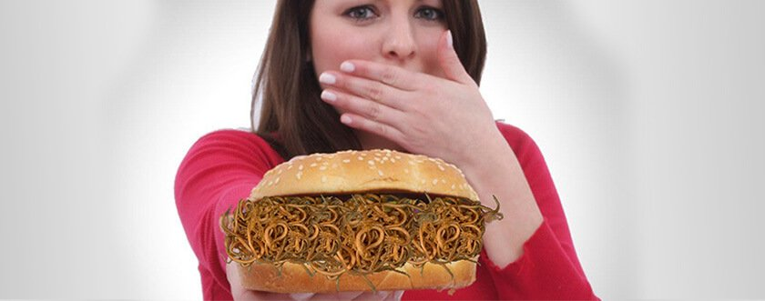

Историята на моята борба с паразитите
Представяте ли си, какво е да осъзнаваш, че вътре в теб паразитират чужди организми? Да, това не може да се сравни дори с филм на ужасите! Особено, ако сте 23-годишно момиче. Само депресия и натрапчиво желание да се отървете от паразитите в тялото. За съжаление, аз трябваше да изпитам всичко това ... Историята НЕ Е ЗА ХОРА СЪС СЛАБИ НЕРВИ.
Всичко започна с необузданата ми любов към уличната храна. Любимото ми развлечение, доскоро, бяха фестивали на уличната храна, панаири и увеселителни паркове. Е, много обичах да опитвам всичко, което готвеха уличните търговци в мазните павилиони. Никакви други вреди, освен мазни натрупвания по ханша, тази храна не ми носеше. До онзи случай ...
Как ТО се засели в мен
Пред сградата на университета, в който учих, се появи ярък павилион. В този ден, по време на почивка между лекциите, отидох да оценя местния асортимент. Усмихнатият продавач ми препоръча "новото" - хитът в продажбите. На външен вид простата хранителна конструкция беше пъстра и обещаваше да бъде вкусна. Няколко минути по-късно в ръката ми имах твърда питка със слабо изпечен кренвирш, от който се стичаше майонеза. Всичко това беше неумело подправено с подправки и украсено с листа босилек. Честно казано, беше страшно да се яде това. Но усещането за глад и кратката почивка на обяд ме накараха да се взема ФАТАЛНО РЕШЕНИЕ. Бързо изядох тази мазна гадост и се върнах в университета.
Последствията от моя ужасен обяд настъпиха бързо. След няколко часа не можах да изляза от тоалетната. Трябваше да пропусна последните лекции, да взема достатъчно вода и да плащам за грешките си вкъщи. Но нищо не се свърши до тук ... За моя голяма изненада, през следващите няколко седмици започнах да отслабвам. Странното беше, че апетитът ми се върна с тройна сила и ядях още повече, отколкото преди. Съквартирантката ми забеляза, че съм започнала да изглеждам бледа и уморена.
Най-лошият кошмар в живота ми
Отначало си помислих, че всичко е заради умората от предстоящата сесия. Но силният сърбеж бързо ме наведе на мисълта, че работата изобщо не е в стреса. Като студентка реших да се възползвам от услугите на лаборантите в катедрата в Университета, за да потвърдя страшните си предположения. Не бяха необходими много молби и бързо ме взеха като “опитно зайче”. После много съжалих за това, защото на следващия ден всички знаеха, ЧЕ АЗ ИМАМ ГЛИСТИ!
Лаборанта от катедрата с ужас изкрещя, че в тялото ми са израснали огромни червеи, които трябва спешно да се режат. Когато чух това за първи път, буквално щях да повърнах на пода пред цялата учебна група. За такъв морален и физически ужас едновременно, животът не ме беше подготвил. Няколко момчета от групата започнаха да викат, че съм зомби и може да заразя всички. Дори не си и помислях да се появя след това в университета. Бях напълно погълната от депресията. Няколко дни плаках в леглото си, прекъсвайки периодично, за да тичам в тоалетната.

Правилното решение в борбата срещу паразитите
Да се съвзема, ми помогна само съквартирантката ми, която просто ме съжали. -”За това всичко ще се забрави още утре, Криси. Основното нещо е да се отървеш от тези същества възможно най-скоро " - успокояваше ме тя. И осъзнах, че е права. А после отново в главата ми звучеше гласът на този лаборант "спешно да се изрежат червеите". Операция? От къде студентка ще има пари за операция? На всичкото отгоре, страхувах се да мисля как хирурзите ще се човъркат в мен.
Пресметнах бюджета си и разбрах, че имам само ЕДИН ШАНС за победа срещу паразитите. И колко съм щастлива, че този път бях достатъчно умна, за да взема ПРАВИЛНОТО РЕШЕНИЕ. Решението беше да поръчам , за който научих от моя университетски професор. Бързо прочетох отзивите, уверих се, че състава на продукта е натурален и го поръчах на официалния сайт на производителя.
Така започна моят нов живот през новия семестър. Таблетките ми помогнаха достатъчно бързо, дори не очаквах толкова бърз ефект. Заради мнителността ми, аз реших да се убедя в чистотата на организма ми вече в клиника, а не в катедрата. Изследванията, за които дадох последните си пари потвърдиха, че съм абсолютно чиста! С резултатите отидох право при колегата в лабораторията, който ме изплаши и ме опозори пред всички. Момчето искренно се извини, а също и бързо пусна слуха че съм “чист” човек.
Тук можете да сложим точка, но историята не свърши. Оказва се, че по време на работата си същия колоритен павилион зарази още много студенти с глисти. Три момчета от групата (да, тези, които ми се подиграваха наскоро) се обърнаха към мен с въпроса как успях да се отърва от паразитите толкова бързо. Разбира се, простих ги и дадох на всички линка за поръчка на . Така успях да стана още по-популярна. Надявам се, че моята история ще ви помогне в борбата срещу паразитите. Съвет накрая: не се увличайте по уличната храна и вземайте само ПРАВИЛНИТЕ РЕШЕНИЯ! До скоро.
29 Коментара


Всичко това ми е много познато. Разбира се не ми се наложи да преживея публичен позор, но глистите попаднаха в моя организъм на 29 години! Добре, че навреме поръчах и прочистих организма си от тези твари. Само като си представя, че можех още да съм инкубатор за размножаването им, УЖАС. Момичета, внимавайте какво ядете
Отвратителна история. За първи път пиша за това, но преди няколко години се сблъсках и с този ужасен проблем - паразитите. Така и мен една приятелка ми препоръча и бързо успях да се отърва от тях

О боже! Мисля, че те познавам...Макар, че може да е просто съвпадение. Защото в моя Университет едно момиче излекува глистите си по същия начин

Колко пъти си обещавам, че ще ям само доказана храна. Но какво да кажа, можете да се отровите дори и в най-луксозния ресторант. При мен лично така стана. Натрових се заедно със съпруга ми на почивка, а вечерята с морски дарове беше много скъпа. След това трябваше да се лекувам повече от месец ... Колко жалко, че не знаех за тогава. Сега ще поръчам предварително, за да имам винаги спешна помощ под ръка

Полезна история. Сега ще подбирам храната си по-внимателно, защото и аз имам лошия навик да ям бърза закуска

Имам дъщеря тинейджърка и аз всеки път я умолявам да не яде тази ужасна улична храна. Ще и дам да прочете историята ти и ще купя от сега . Няма да навреди за профилактика, още повече, че не е скъп
Винаги съм се страхувала, да не се заразя с глисти, но сина ми си поигра с едни улични котки и цялото семейство трябваше да се борим с паразитите

Бих забранила всички тези павилиони с мазна храна. Какво ли още има освен паразитите там! По-добре да продават здравословна храна и фрешове до учебните заведения.
Майка ми поръча за мен същите таблетки за глисти . Работя в приют и често и се налага да имам работа със заразени животни. Много бързо ми помогнаха
Наистина, историята не е за хора със слаби нерви! Едвам не повърнах, докато я прочетох...Ужас и кошмар! Вече никога няма да мога да ям бургери навън. Мислех си, че с глисти могат да се заразят само децата.